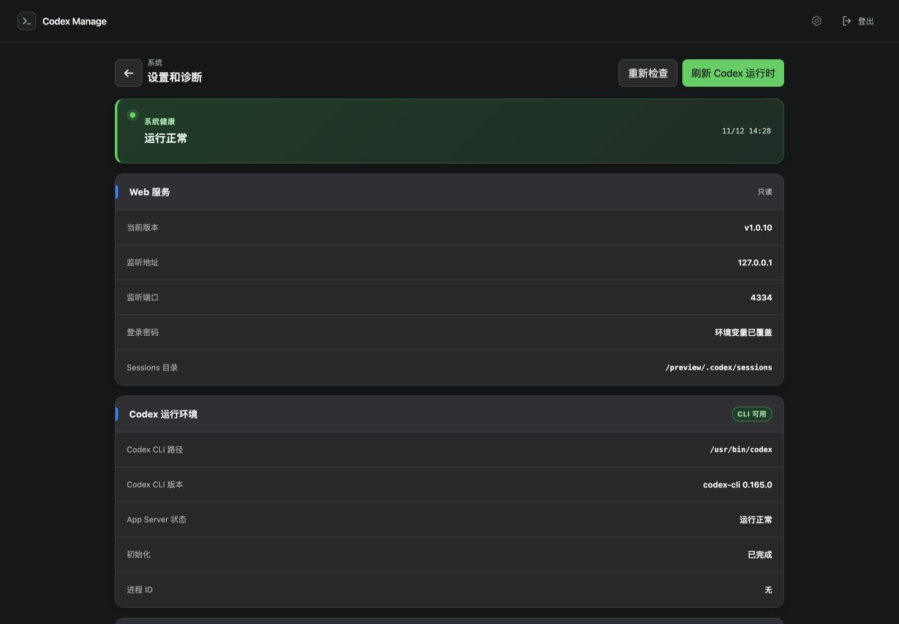
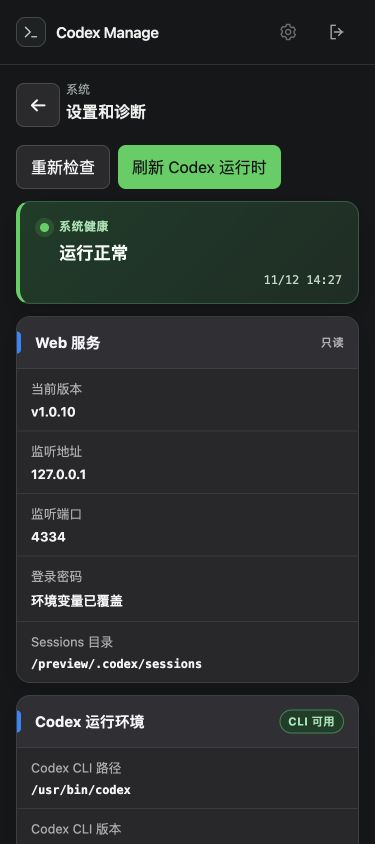

设置页“当前版本”字段
已实现
尚未合并 main、尚未发布；现有 v1.0.10 发布包不包含新字段。
位置：设置和诊断 → Web 服务 → 当前版本。
安装版读取正在运行包的版本，例如 v1.0.10；开发环境显示源码提交及本地修改状态。版本信息按进程启动时固定，便于识别服务是否已重新启动到新版。
5 项相关测试、类型检查与生产构建通过。编译后的配置接口可在其他工作目录读取安装包版本；替换文件不会使旧进程冒报新版本。375px 界面无横向溢出，“重新检查”后显示正常。
桌面预览
截图为隔离界面预览；路径和健康状态为测试数据。版本值来自现有 v1.0.10 包元数据，不表示该包已含新字段。

手机预览 · 375px

验证记录
{
"status": "已实现",
"merged": false,
"published": false,
"unitTests": {
"passed": 5,
"failed": 0
},
"typecheck": "passed",
"productionBuild": "passed",
"compiledRoute": {
"readInstalledMetadata": true,
"version": "v1.0.10",
"packageJsonVersion": "1.0.0",
"workingDirectory": "/private/tmp",
"runningVersionUnaffectedByMetadataReplacement": true
},
"ui": {
"desktop": "passed",
"mobile375": "passed",
"mobileDocumentWidth": 375,
"refresh": "passed",
"screenshotsAreIsolatedPreview": true
},
"existingMainServiceChanged": false
}原始 JSON